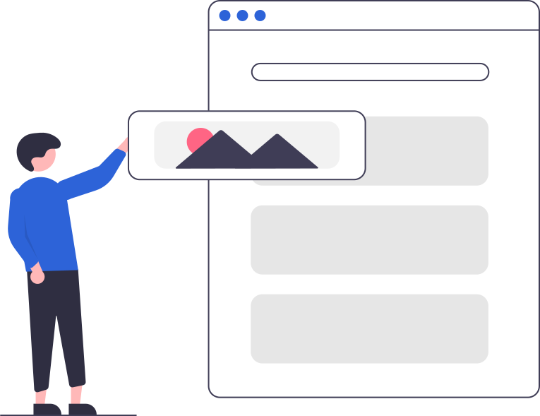

I1INNO.One
Welcome to INNO.One
พร้อมช่วยให้วันทำงานของคุณง่ายขึ้น
ไม่ว่าจะต้องแจ้งปัญหา ตรวจสอบอุปกรณ์ หรือจัดการทรัพย์สิน ทุกอย่างเริ่มจากบัญชีองค์กรเดียวกัน

ไม่ว่าจะต้องแจ้งปัญหา ตรวจสอบอุปกรณ์ หรือจัดการทรัพย์สิน ทุกอย่างเริ่มจากบัญชีองค์กรเดียวกัน
